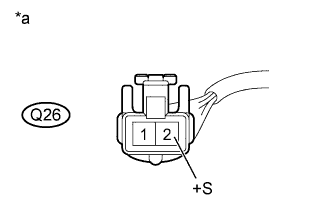

AIR CONDITIONING SYSTEM > Rear Magnetic Valve Circuit |
| 1.PERFORM ACTIVE TEST USING INTELLIGENT TESTER (REAR MAGNETIC VALVE) |
Select the Active Test, use the intelligent tester to generate a control command, and then check that the rear cooling unit expansion valve (rear magnetic valve) operates (Click here).
| Tester Display | Test Part | Control Range | Diagnostic Note |
| Rear A/C Mag Valve | Rear magnetic valve operation | ON or OFF | - |
|
| ||||
| OK | ||
| ||
| 2.CHECK HARNESS AND CONNECTOR (REAR MAGNETIC VALVE - BATTERY) |
|  |
Disconnect the Q26 valve connector.
Measure the voltage according to the value(s) in the table below.
| Tester Connection | Condition | Specified Condition |
| Q26-2 (+S) - Body ground | Engine switch off | Below 1 V |
| Engine switch on (IG) | 11 to 14 V |
| *a | Front view of wire harness connector (to Rear Cooling Unit Expansion Valve [Rear Magnetic Valve]) |
|
| ||||
| OK | |
| 3.CHECK HARNESS AND CONNECTOR (REAR MAGNETIC VALVE - AIR CONDITIONING AMPLIFIER) |
Disconnect the Q26 valve connector.
Disconnect the G13 amplifier connector.
Measure the resistance according to the value(s) in the table below.
| Tester Connection | Condition | Specified Condition |
| Q26-1 (RMGV) - G13-19 (RMGV) | Always | Below 1 Ω |
| Q26-1 (RMGV) - Body ground | Always | 10 kΩ or higher |
|
| ||||
| OK | |
| 4.REPLACE REAR COOLING UNIT EXPANSION VALVE (REAR MAGNETIC VALVE) |
Replace the rear cooling unit expansion valve (rear magnetic valve) (Click here).
|
| ||||
| OK | ||
| ||